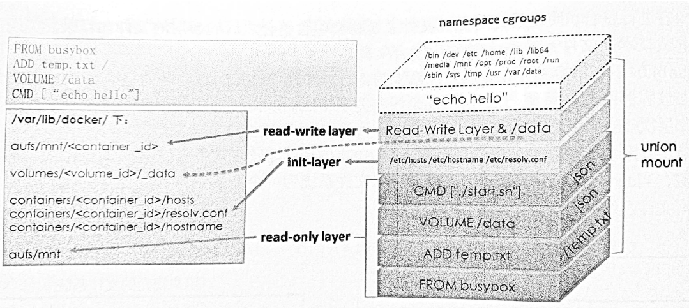
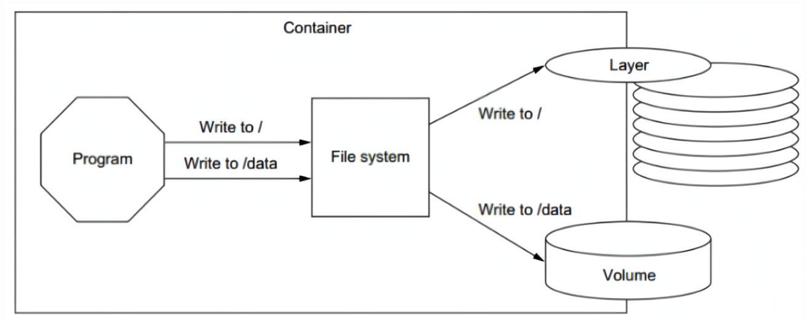
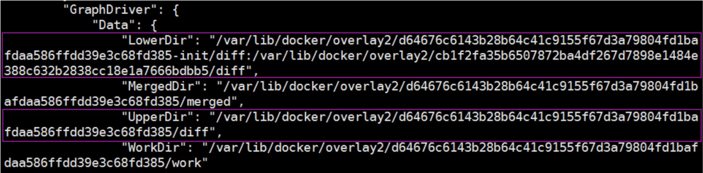
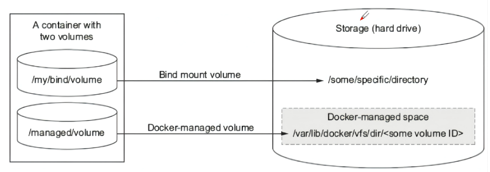
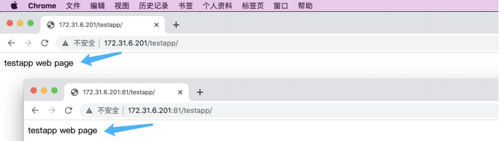

Docker 存储管理，数据卷和数据卷容器
docker 中的重要数据通过-v 选项挂载数据卷实现持久化。
Docker 存储简介：
https://en.wikipedia.org/wiki/UnionFS
UnionFS是文件级的存储驱动，实现方式是把位于不同位置的目录或文件合并 mount 到同一个目的目录中，简单来说 就是支持将不同目录挂载到同一个虚拟文件系统下的文件系统，这种文件系统可以一层一层地叠加修改文件，无论底下有多少层都是只读的，只有最上层的文件系统是可写的。

Docker 存储引擎：
- Overlay：UnionFS文件系统，Linux内核3.18后支持。
- overlay2: Overlay的升级版，到目前为止，所有Linux发行版推荐使用的存储类型。
- devicemapper：是CentOS和RHEL的早期使用的存储驱动程序，因为之前的内核版本较低不支持overlay2，但是当前较新版本的CentOS和RHEL现在已经支持overlay2，因此推荐使用overlay2。
- ZFS(Sun-2005)/btrfs(Oracle-2007)：目前没有广泛使用。
- vfs: 用于测试环境，适用于无法使用 copy-on-write 文件系统的情况。 此存储驱动程序的性能很差，通常不建议用于生产。
- AUFS(Another UnionFS): 是早期的一种 UnionFS 文件系统的实现，是Docker 18.06及更早版本使用的存储引擎。
https://docs.docker.com/storage/storagedriver/select-storage-driver/
Docker 配置参数：
~# cat /etc/docker/daemon.json
{
"storage-driver": "overlay2",
"insecure-registries": ["harbor.ketitx.com","harbor.myserver.com","172.31.7.105"],
"registry-mirrors": ["<https://9916w1ow.mirror.aliyuncs.com>"],
"exec-opts": ["native.cgroupdriver=systemd"],
"live-restore": false,
"log-opts": {
"max-file": "5",
"max-size": "100m"
}
}
~# systemctl restart docker
Docker 数据管理：
如果正在运行中的容器修如果生成了新的数据或者修改了现有的一个已经存在的文件内容，那么新产生的数据将会被复制到读写层进行持久化保存，这个读写层也就是容器的工作目录，此即“写时复制(COW) copy on write”机制。
如下图是将对根的数据写入到了容器的可写层，但是把/data中的数据写入到了一个另外的 volume 中用于数据持久化。

Lower Dir：image镜像层(镜像本身，只读)
Upper Dir：容器的上层(读写)
Merged Dir：容器的文件系统，使用 Union FS（联合文件系统）将 lowerdir 和 upper Dir：合并给容器使用。
Work Dir：容器在宿主机的工作目录，可以限制权限
# 存放位置，宿主机
/var/lib/docker/overlay2/************************/diff

- Docker的镜像是分层设计的，镜像层是只读的，通过镜像启动的容器添加了一层可读写的文件系统，用户写入的数据都保存在这一层当中。
- 如果要将写入到容器的数据永久保存，则需要将容器中的数据保存到宿主机的指定目录，目前Docker的数据类型分为两种:
- 一是数据卷(data volume)，数据卷实际上就是宿主机上的目录或者是文件，可以被直接mount到容器当中作为容器的本地文件系统使 用，实际生产环境中，需要针对不同类型的服务、不同类型的数据存储要求做相应的规划，最终保证服务的可扩展性、稳定性以及数据的 安全性。基于数据卷通过将宿主机的文件或目录挂载到容器的指定目录，当容器中的挂载目录产生的新数据即可间接的保存到宿主机以实 现持久化的目的.
- 二是数据卷容器(Data volume container), 数据卷容器是将宿主机的目录挂载至一个专用的数据卷容器，然后让其他容器通过数据卷容器 继承挂载的目录或文件，以实现将新产生的数据持久化到宿主机的目的。

创建数据卷：
# docker volume create nginx-data
# docker volume ls
DRIVER VOLUME NAME
local nginx-data
# -v **本地目录:容器目录** 或 -v 容器目录
# docker run -it -d -p 80:80 -v nginx-data:/data nginx:1.20.2
4445e4640c74e1c503a7f8c704270abd58c5bc70aacf600e39945f7fd74ac810
# docker exec -it 4445e4640c74 bash
root@4445e4640c74:/# echo "nginx web" > /data/index.html
root@4445e4640c74:/# exit
exit
root@docker-server1:~# ls /var/lib/docker/volumes/nginx-data/_data/index.html
/var/lib/docker/volumes/nginx-data/_data/index.html
数据目录挂载：
以数据卷的方式，将自定义的宿主机目录或文件提供给容器使用，比如容器可以直接挂载宿主机本地的数据目录(如mysql容器的数据持久化)、 配置文件(如nginx的配置文件)、静态文件(如web服务的图片或js文件)等，只需要在创建容器的时候指定挂载即可。
# mkdir /data/testapp –p
# echo "testapp web page" > /data/testapp/index.html
# cat /data/testapp/index.html
testapp web page
启动两个测试容器，web1容器和web2容器，分别测试能否访问到宿主机的数据，注意使用-v参数，将宿主机目录映射到容器内部，web2的ro 表示在容器内对该目录只读，默认的权限是可读写的：
# docker run -d --name web1 -v /data/testapp:/usr/share/nginx/html/testapp -p 80:80 nginx:1.20.2
# docker run -d --name web2 -v /data/testapp:/usr/share/nginx/html/testapp:ro -p 81:80 nginx:1.20.2

数据目录及配置多卷挂载：
ngin多卷挂载：
# mkdir /data/nginx/conf -p
# docker cp web1:/etc/nginx/nginx.conf /data/nginx/conf/
# docker run -d --name web3 -v /data/testapp:/usr/share/nginx/html/testapp -v /data/nginx/conf/nginx.conf:/etc/nginx/nginx.conf:ro -p 83:80 nginx:1.20.2
mysql容器：
# docker pull mysql:5.7.38
# docker run -it -d -p 3306:3306 -v /data/mysql:/var/lib/mysql -e MYSQL_ROOT_PASSWORD=123456 mysql:5.7.38 48e88061e80b9983d0d735f29a176efb810de32f0bd30e12893def798783b9d9
# mysql -uroot -p123456 -h172.31.6.201
Type 'help;' or '\\h' for help. Type '\\c' to clear the current input statement.
mysql>
删除容器：
创建容器的时候指定参数会删除 /var/lib/docker/containers/ 的容器数据目录，但是不会删除数据卷的内容，如下
# docker rm -f web3
# ls /data/testapp/index.html /data/testapp/index.html #挂载的数据卷不会被删除
- 数据卷的特点及使用：
- 数据卷是宿主机的目录或者文件，并且可以在多个容器之间共同使用。
- 在宿主机对数据卷更改数据后会在所有容器里面会立即更新。
- 数据卷的数据可以持久保存，即使删除使用使用该容器卷的容器也不影响。
- 在容器里面的写入数据不会影响到镜像本身。
- 数据卷使用场景：
- 容器数据持久化(mysql数据、nginx日志等类型)
- 静态web页面挂载
- 应用配置文件挂载
- 多容器间的目录或文件共享
数据卷容器：（使用场景很少）
数据卷容器功能是可以让数据在多个 docker 容器之间共享，即先要创建一个后台运行的A容器作为 Server，之后创建的B容器、C容器等都可以同时访问A容器的内容，因此数据卷容器用于为其它容器提供卷的挂载继承服务，数据卷为其它容器提供数据读写服务， A容器称为 server 端、其它容器成为 client 端：
卷容器Server:
# docker run -d **--name volume-server** -v /data/testapp:/usr/share/nginx/html/testapp -v /data/nginx/conf/nginx.conf:/etc/nginx/nginx.conf:ro registry.cn-hangzhou.aliyuncs.com/zhangshijie/pause:3.8
client1:
# docker run -d --name web1 **--volumes-from volume-server** -p80:80 nginx:1.20.2
client2:
# docker run -d --name web2 **--volumes-from volume-server** -p81:80 nginx:1.20.2
-
特点：
- 适用于同类服务的数据卷共享
- client会继承卷server挂载和挂载权限
- 停止卷server，也不影响已经运行的容器、甚至也不影响新建容器
- 删除卷server，不影响已经运行的容器，但是不能新建容器